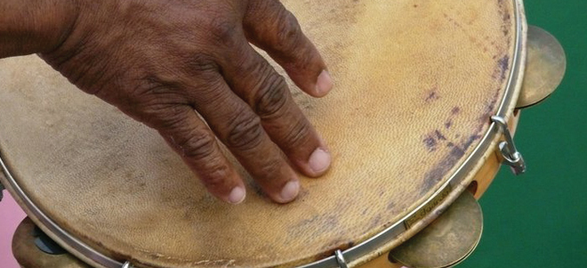

Maculelê
Foi inspirado em uma arte marcial armada de escravizados malês. Conta a lenda de um jovem guerreiro que sozinho defendeu sua tribo de um grupo rival usando apenas dois pedaços de pau. Na dança, com dois bastões, os participantes desferem e aparam golpes no ritmo da música. Outros grupos pelo país utilizam facões no lugar dos bastões, o que proporciona um bonito efeito visual pelas faíscas que saem após cada golpe.
Matriz do Samba
No começo do século 20 se consolidaram, no Rio de Janeiro, três formas de samba: o partido alto, o samba-enredo e o samba de terreiro. Matrizes referenciais do gênero, guardam relação direta com os padrões sociais de onde surgem. Nele, existe a autoria individual, porém a performance é coletiva. O improviso é outro aspecto importante e se mantém enraizado na prática amadora ou comunitária dessas formas de expressão. As matrizes do Samba no RJ foram tombadas como Patrimônio Imaterial em 2007.